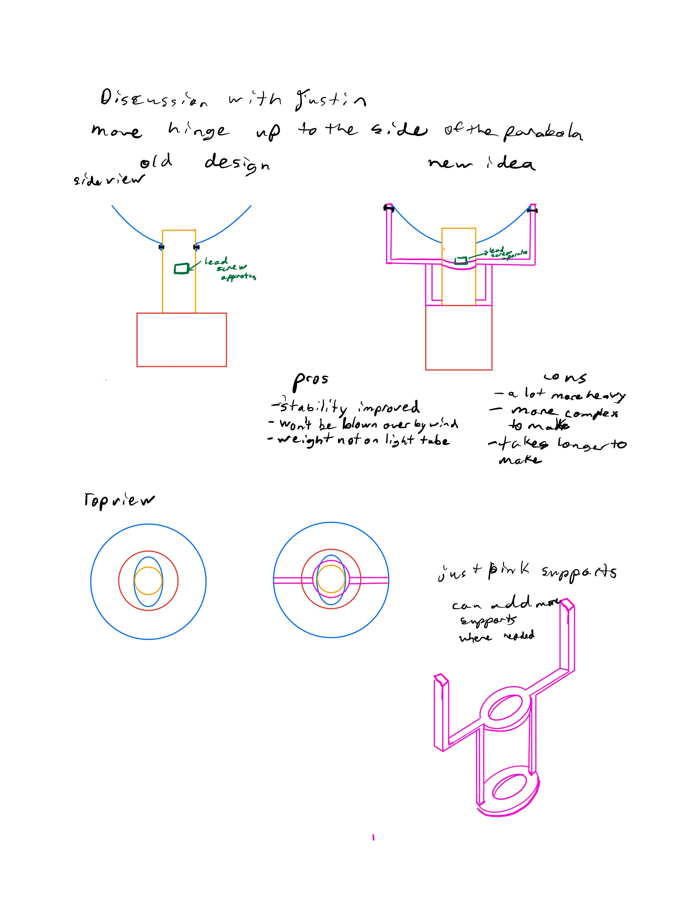
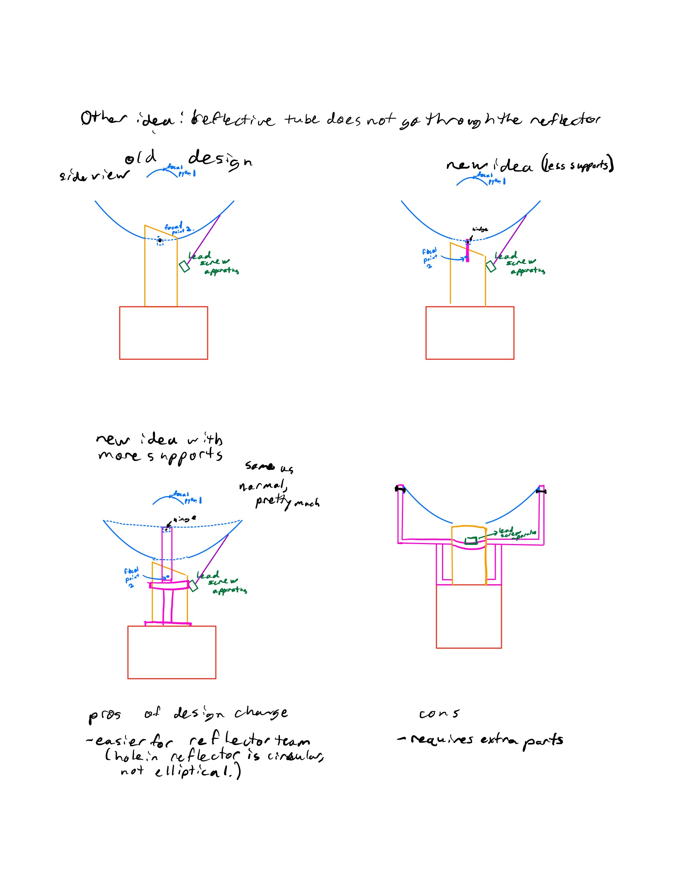
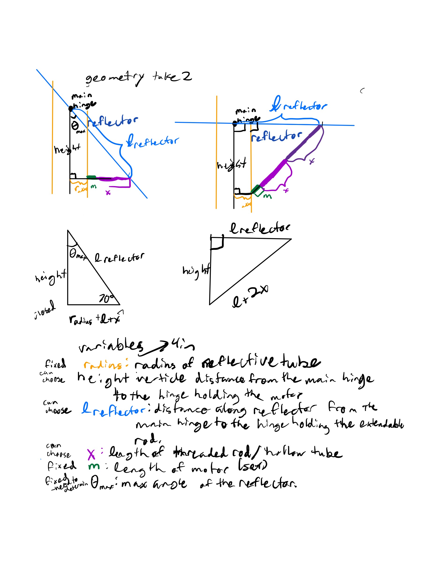
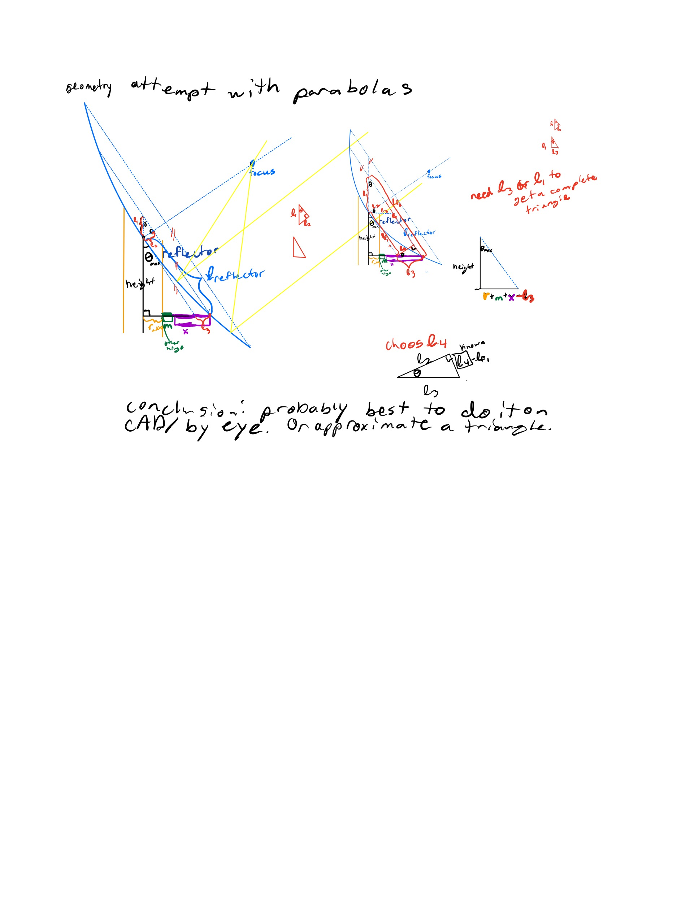
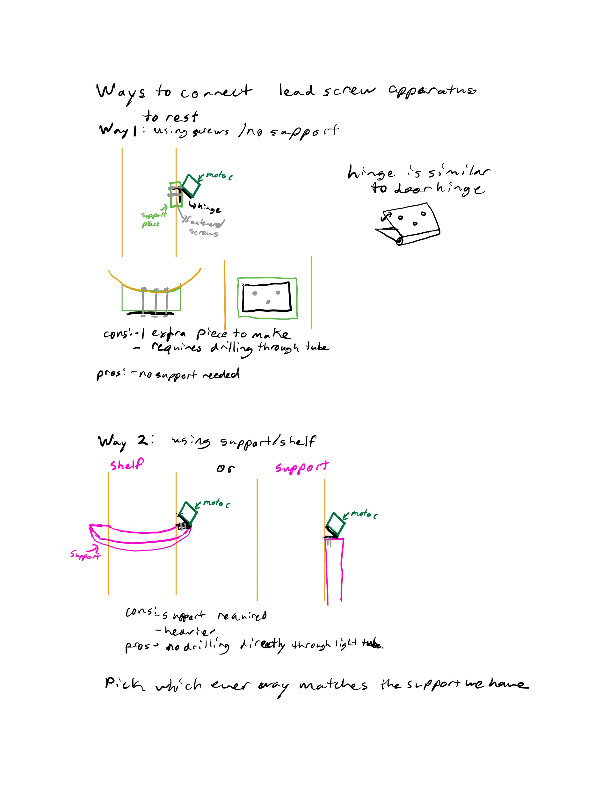
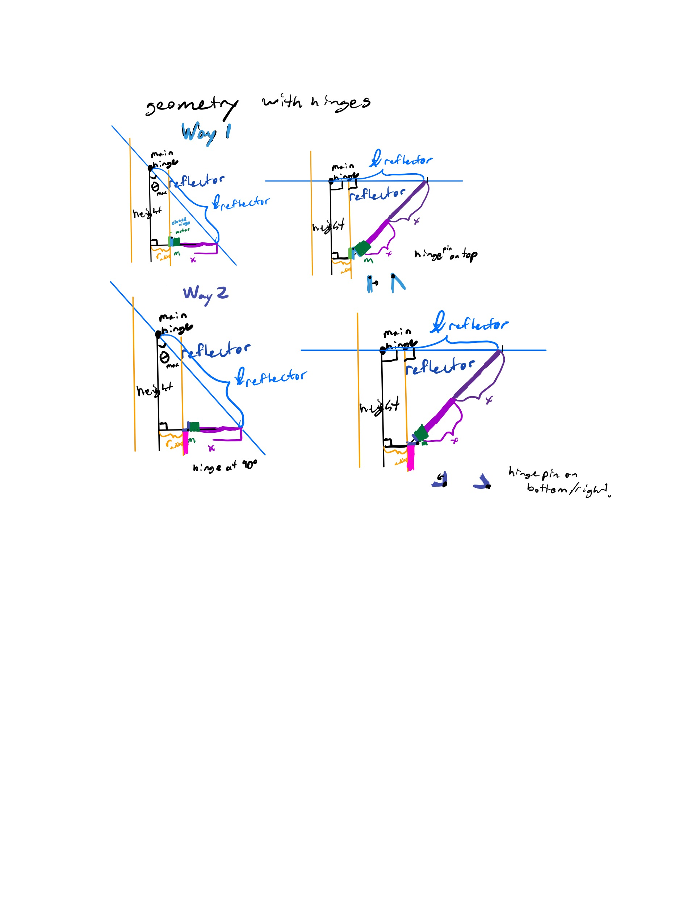
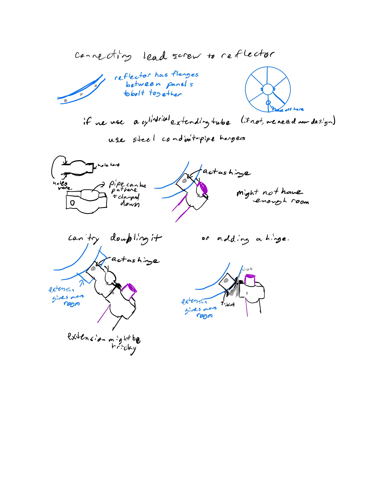
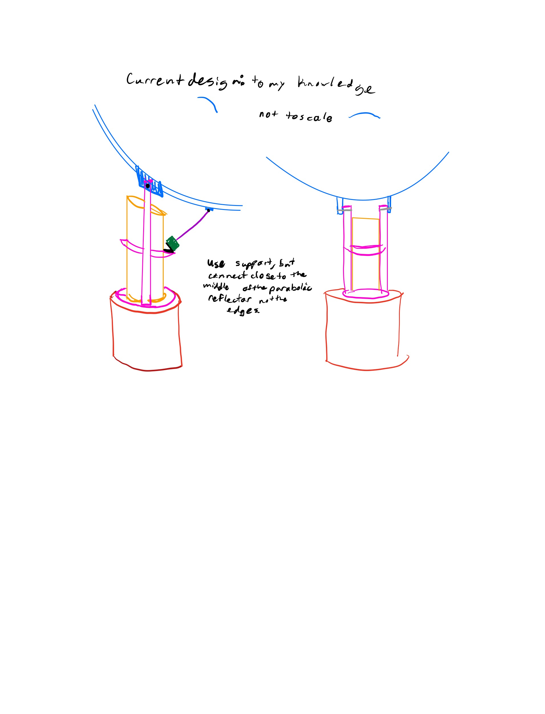

## Week 9:
### Monday:
Since Catherine was not here and I couldn't use CAD, I continued working out some of the math involved with our
altitude tracking system. In addition, I talked to Justin and the reflector team, and we discovered we had
different ideas about what the final design would be. I have sketched out some of the ideas we talked about:


Here's some of the geometry worked out:


### Wednesday:
Catherine and I started brainstorming how every part of the reflector would attach to one another.
In addition, we finalized the design.
First, we discussed the options for connecting the lower hinge of our lead screw device to the reflective tube.
We didn't know what support, if any, there was going to be at this point, so we had several ideas:

We also discussed how the hinges would be placed in these options:

We also discussed how we could design the upper hinge of the lead screw device that attaches to the reflector:

Finally, I sketched my idea of what the final design is like:
